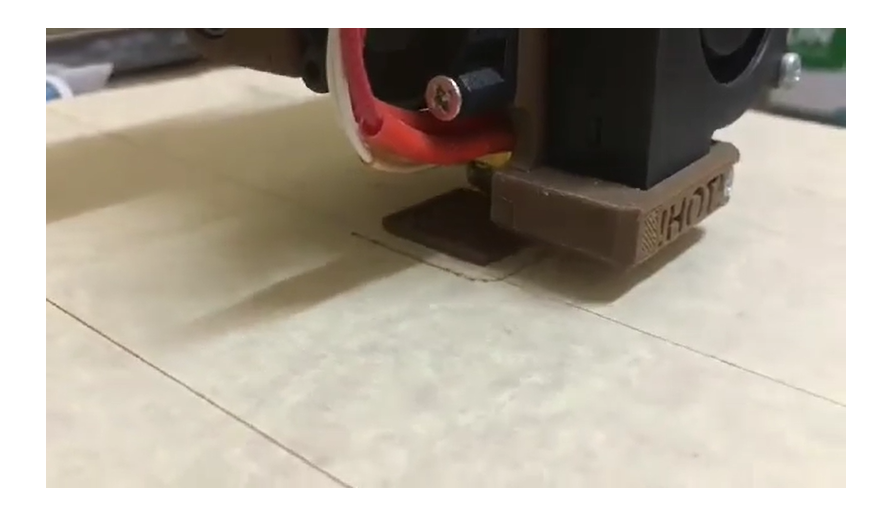
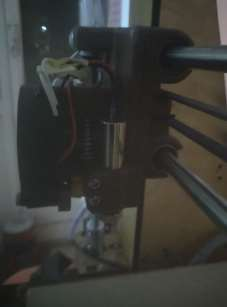
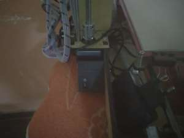
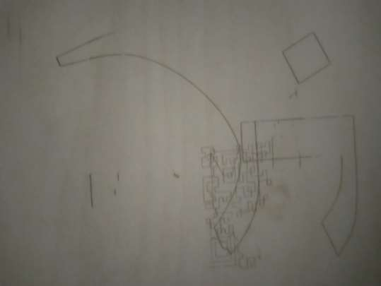

3D printer with integrated laser engraver3D-Drucker mit integrierter Lasergravur
A hybrid desktop machine that prints polymer parts (FDM) and engraves surfaces with a laser, using one Cartesian motion system, one controller and one frame. Built and tested by a team of seven students at Kafr El-Sheikh University, Faculty of Engineering (Production & Mechanical Design).Eine hybride Tischmaschine, die Kunststoffteile druckt (FDM) und Oberflächen per Laser graviert – mit einem gemeinsamen kartesischen Bewegungssystem, einer Steuerung und einem Rahmen. Aufgebaut und getestet von einem Team aus sieben Studierenden der Kafr El-Sheikh University, Fakultät für Ingenieurwesen (Produktion & mechanisches Design).



Problem & goalProblemstellung & Ziel
FDM printers and laser engravers share the same core: a gantry that moves a tool in X/Y/Z under G-code control. The goal was to show that one low-cost machine can do both jobs – additive manufacturing of polymer parts and marking/engraving of flat workpieces – by swapping the tool instead of buying two machines. The thesis positions it for specific, low-volume components rather than series production.FDM-Drucker und Lasergravierer haben denselben Kern: ein Portal, das ein Werkzeug G-Code-gesteuert in X/Y/Z bewegt. Ziel war zu zeigen, dass eine kostengünstige Maschine beide Aufgaben erfüllen kann – additive Fertigung von Kunststoffteilen und Markieren/Gravieren flacher Werkstücke – durch Wechsel des Werkzeugs statt Kauf zweier Maschinen. Die Arbeit sieht den Einsatz bei speziellen Einzel- und Kleinserienteilen, nicht in der Serienfertigung.
My roleMeine Rolle
Team member in a seven-person bachelor's thesis team (supervisor: Dr. Ibrahim Maher). The machine was designed, built, calibrated and tested jointly; the thesis received the grade excellent. The work covered component selection, mechanical assembly of the frame and axes, wiring of the electronics, integration of the laser module, calibration, test prints and engravings, cost analysis and documentation.Teammitglied in einem siebenköpfigen Bachelorarbeits-Team (Betreuer: Dr. Ibrahim Maher). Die Maschine wurde gemeinsam ausgelegt, aufgebaut, kalibriert und getestet; die Arbeit wurde mit ausgezeichnet bewertet. Umfang: Komponentenauswahl, mechanischer Aufbau von Rahmen und Achsen, Verdrahtung der Elektronik, Integration des Lasermoduls, Kalibrierung, Testdrucke und -gravuren, Kostenanalyse und Dokumentation.
Design & componentsKonstruktion & Komponenten
The machine is based on the open Graber i3 design, a derivative of the Prusa i3 in which the printed frame parts are replaced by wooden parts that can be laser- or CNC-cut. The thesis documents the frame parts, the full parts list and the assembly drawings.Die Maschine basiert auf dem offenen Graber-i3-Design, einer Variante des Prusa i3, bei der die gedruckten Rahmenteile durch laser- oder CNC-geschnittene Holzteile ersetzt sind. Die Arbeit dokumentiert die Rahmenteile, die vollständige Stückliste und die Baugruppenzeichnungen.
| Frame & motionRahmen & Bewegung | Wooden Graber i3 frame; 8 mm smooth rods with LM8UU linear bearings; GT2 belts (6 mm) with 20-tooth pulleys for X/Y; 8 mm lead screw for Z; flexible 5 × 8 mm couplersGraber-i3-Holzrahmen; 8-mm-Führungswellen mit LM8UU-Linearlagern; GT2-Riemen (6 mm) mit 20-Zahn-Riemenscheiben für X/Y; 8-mm-Gewindespindel für Z; flexible Kupplungen 5 × 8 mm |
|---|---|
| DrivesAntriebe | NEMA 17 stepper motors with A4988 stepper driversNEMA-17-Schrittmotoren mit A4988-Schrittmotortreibern |
| ControllerSteuerung | Arduino Mega 2560 + RAMPS 1.4; 2004 LCD; SD card for stand-alone jobs; mechanical endstops on each axisArduino Mega 2560 + RAMPS 1.4; LCD 2004; SD-Karte für autarken Betrieb; mechanische Endschalter an jeder Achse |
| Printing toolDruckwerkzeug | E3D V6 hot end, metal extruder, 12 V turbo fan, PCB heated bed 210 × 210 mm with NTC sensor, glass print plate on spring mountsE3D-V6-Hotend, Metall-Extruder, 12-V-Turbolüfter, PCB-Heizbett 210 × 210 mm mit NTC-Sensor, Glasdruckplatte auf Federhalterungen |
| Engraving toolGravurwerkzeug | 650 nm, 200 mW red laser module mounted on the tool carriageRotes Lasermodul 650 nm, 200 mW, am Werkzeugschlitten montiert |
| PowerEnergieversorgung | 12 V / 20 A power supply with switchNetzteil 12 V / 20 A mit Schalter |
Switching between printing and engravingUmschalten zwischen Druck und Gravur
What changesWas sich ändert
- The laser module takes the place of the proximity (bed-levelling) sensor of a standard printer.Das Lasermodul ersetzt den Näherungssensor (Bettnivellierung) eines Standarddruckers.
- When switching from printing to engraving, the supply voltage changes from 12 V to 5 V.Beim Umschalten von Druck auf Gravur wechselt die Spannung von 12 V auf 5 V.
ConsequenceKonsequenz
- No automatic bed levelling – the bed is levelled manually with the four spring-loaded screws.Keine automatische Bettnivellierung – das Bett wird manuell über vier gefederte Schrauben ausgerichtet.
- After every mode switch the machine has to be recalibrated before the next job.Nach jedem Moduswechsel muss die Maschine vor dem nächsten Auftrag neu kalibriert werden.
WorkflowArbeitsablauf
- Model & sliceModell & Slicing – G-code generated in Cura (layer height, shell and top/bottom thickness, infill density, print speed, nozzle and bed temperature, filament diameter, flow, nozzle size).G-Code-Erzeugung in Cura (Schichthöhe, Wand- und Boden-/Deckendicke, Fülldichte, Druckgeschwindigkeit, Düsen- und Betttemperatur, Filamentdurchmesser, Fluss, Düsengröße).
- HomeReferenzfahrt – auto-home to the endstops on X, Y and Z to define the zero point.Referenzfahrt auf die Endschalter in X, Y und Z zur Definition des Nullpunkts.
- Level the bedBett nivellieren – move the head over the whole bed at constant Z and adjust the bed screws until a sheet of paper just fits between head and bed at every point.Kopf bei konstantem Z über das ganze Bett fahren und die Bettschrauben einstellen, bis an jeder Stelle gerade ein Blatt Papier zwischen Kopf und Bett passt.
- Preheat & runVorheizen & starten – preheat hot end and bed (e.g. PLA preset) and start the job from the SD card via the LCD.Hotend und Bett vorheizen (z. B. PLA-Voreinstellung) und den Auftrag über das LCD von der SD-Karte starten.
- Switch mode & recalibrateModus wechseln & neu kalibrieren – for engraving, switch the supply to the laser and repeat homing and levelling before the job.Für die Gravur die Versorgung auf den Laser umschalten und Referenzfahrt und Nivellierung vor dem Auftrag wiederholen.
ResultsErgebnisse
- A working combined machine: the thesis concludes that a combined 3D printing and laser engraving machine is feasible on one platform.Eine funktionsfähige Kombimaschine: Die Arbeit kommt zu dem Ergebnis, dass Druck und Lasergravur auf einer Plattform machbar sind.
- FDM test parts printed and engraving tests on wood carried out (see photos).FDM-Testteile gedruckt und Gravurversuche auf Holz durchgeführt (siehe Fotos).
- Cost analysis: bill of materials with 30 positions, total component cost 5,081 EGP; cost model for printed parts covering material, printing time, labour, machine depreciation and post-processing.Kostenanalyse: Stückliste mit 30 Positionen, Komponentenkosten gesamt 5.081 EGP; Kostenmodell für Druckteile mit Material, Druckzeit, Personal, Maschinenabschreibung und Nachbearbeitung.



Limitations & lessons learnedGrenzen & Erkenntnisse
- Manual levelling: giving up the proximity sensor for the laser removes automatic bed levelling, so setup time and operator skill matter.Manuelle Nivellierung: Da der Laser den Näherungssensor ersetzt, entfällt die automatische Bettnivellierung – Rüstzeit und Bedienerkönnen werden wichtig.
- Recalibration after each mode switch adds changeover time – a fixed, repeatable tool mount or a separate levelling probe would be the next design step.Neukalibrierung nach jedem Moduswechsel verlängert die Umrüstzeit – eine feste, wiederholgenaue Werkzeugaufnahme oder ein separater Nivelliersensor wäre der nächste Konstruktionsschritt.
- Not for series production: the production rate is slow; the machine fits one-off and special parts.Nicht für Serienfertigung: Die Ausbringung ist gering; die Maschine eignet sich für Einzel- und Sonderteile.
- Operator know-how: running both modes well requires a skilled operator with knowledge of G-code and slicing/simulation software.Bedienerwissen: Beide Modi sicher zu betreiben erfordert einen qualifizierten Bediener mit Kenntnissen in G-Code und Slicing-/Simulationssoftware.
Skills & keywordsKenntnisse & Schlagworte
CreditsMitwirkende
Bachelor's thesis “Laser engraving and 3D printing machine”, Kafr El-Sheikh University, Faculty of Engineering, Mechanical Department, Production & Mechanical Design section, August 2020. Supervisor: Dr. Ibrahim Maher.Bachelorarbeit „Laser engraving and 3D printing machine“, Kafr El-Sheikh University, Fakultät für Ingenieurwesen, Mechanical Department, Bereich Produktion & mechanisches Design, August 2020. Betreuer: Dr. Ibrahim Maher.
Team:Team: Assem Ryan, Ahmed Mohsen Hafez, Salwa' Elzoghby, Ahmed Ali Nasef Khalifa, Mohamed Samy Ibrahim, Karim Saad Khalifa, Ahmed Lotfy Abo El-magd.
Frame design: Graber i3 (open-source derivative of the Prusa i3). All photos show the team's prototype.Rahmendesign: Graber i3 (Open-Source-Variante des Prusa i3). Alle Fotos zeigen den Prototyp des Teams.
← Back to all projects← Zurück zu allen Projekten